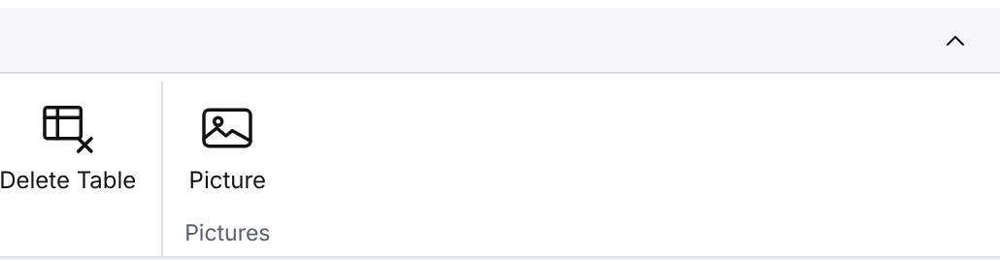
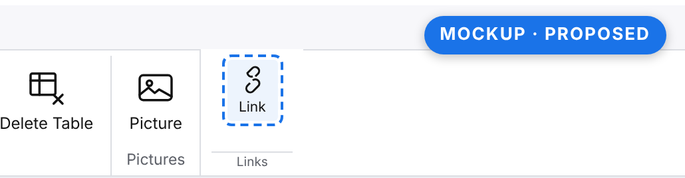
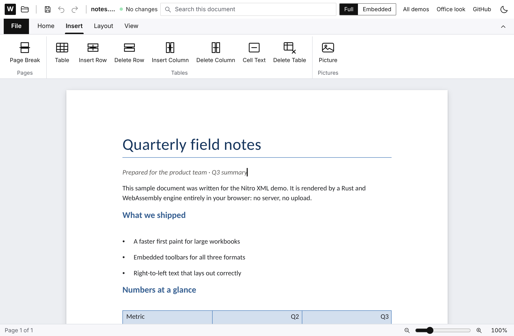
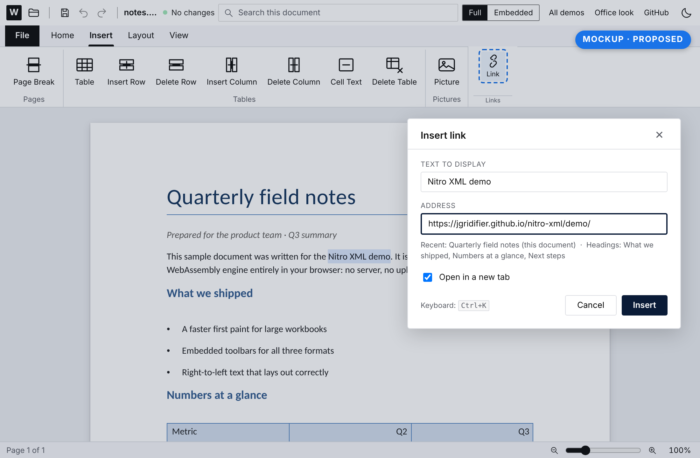

Insert and edit links (Ctrl+K), with a link card on hover
Approve: tap 👍 on the issue · Decline: tap 👎
Close-up of the change




Full screen


Today: the Insert tab has Page Break, Tables and Picture but no Link, and Ctrl+K does nothing (the console logs "unsupported edit op insert.link").


Mockup: Insert > Links > Link (Ctrl+K) opens an Insert link box with the selected text, an address, and links to headings in the document.
Tap an image to open it full size.
Why
Adding a link to selected text is a basic editing step in Word, PowerPoint, Google Docs and every web editor. Nitro already reads and displays links in files and fires a nitro-hyperlink event when one is clicked, and Ctrl+K is already bound to an insert.link command, but the command does nothing. Finishing it lets people add, edit and remove links without leaving Nitro.
Definition of done
- Insert > Links > Link and Ctrl+K open an Insert link box prefilled with the selected text; Insert turns the selection into a link (blue, underlined) and is one undo step.
- With the caret in a link, Ctrl+K edits it; a hover card shows the address with Copy, Edit and Remove; Ctrl+Click opens the link (fires nitro-hyperlink for hosts).
- Links to headings in the same Word document work (bookmark anchors).
- Saved files open in Word and PowerPoint without repair (validator + LibreOffice round-trip in CI); only http, https and mailto addresses are accepted.
- Playwright tests cover insert, edit, remove and save round-trip in Word and PowerPoint; bundle-budget and all required checks green.
Approve: tap 👍 on the issue · Decline: tap 👎